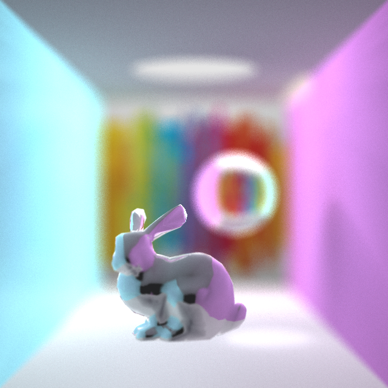
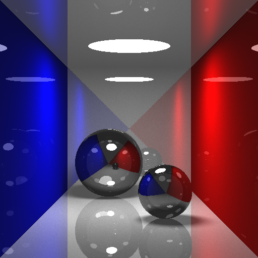
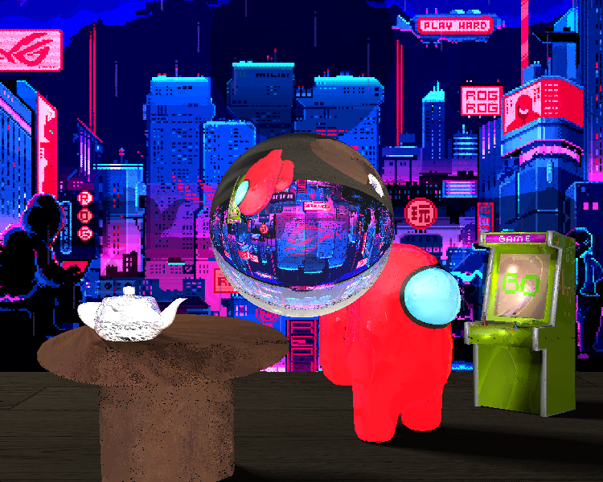
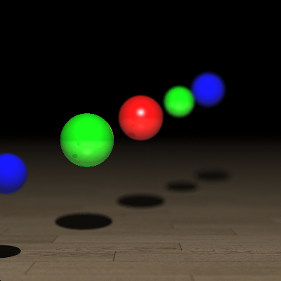

Ray Tracing Renderer
This renderer supports Monte Carlo path tracing with reflection and refraction. Simple geometries (cubes, spheres, circles, cylinders, etc.) can be loaded in from .txt files, while complicated triangular meshes with uv textures and normal vector interpolation can be loaded from .obj files. Area lights are supported to create soft shadows. Moreover, we support depth of fields effects and achieve anti-aliasing by super-sampling. For more details, please click the button and redirect to the main slide.
1 Overview
I implement a ray tracer based on the path tracing algorithm, which supports:
Ray reflection, refraction
Color Bleeding effects by monte carlo sampling the directions of diffuse rays.
Loading in simple geometries such as spheres, circles, cubes and cylinders from .txt file
Area lights that create soft shadows
Depth of fields
Anti-aliasing by supersampling
Loading in triangle meshes from .obj file, which supports uv textures and normal vector interpolation
Accelerate the computation of triangle mesh intersections by bounding box and binary space tree
Coarse-grained multi-processing acceleration by creating multiple threads that compute different pixels.
2 Implementation Details
2.1 Main loop
The main logic of this ray tracer is as follows:
Ray Trace (depth, weight):
if intersect with lights: return light color
if not intersect with any objects: return background color
compute Phong shading
if (
depth == 1orweight < thres) returncompute reflective ray and add color
reflect_weight * Ray Trace(depth-1, weight * reflect_weight)compute refractive ray and add color
refract_weight * Ray Trace(depth-1, weight * refract_weight)- If total reflection happens, the ray is actually reflection ray
Sample
num_samplesdiffuse ray by consine sampling, then add the mean colors ofdiffuse_weight * Ray Trace(depth-1, weight * diffuse_weight)
2.2 Area Light
- Area lights are created together with a Object3D pointer. For example, a circle or a sphere that spreading out lights.
- In order to compute Phong shading, we need to sample points on the Object3D object. We specify the sampling algorithms for circles, spheres, cubes and cylinders. These objects can spread out lights in my ray tracer!
2.3 Meshes
I write a simple obj file parser to load in .obj files. It supports reading multiple materials with uv texture maps and vertex normals.
UV texture and normal interpolation computed by: (from
include/triangle.hpplines 50 - 60)if (hasNvec) normal_t = (1 - result[1] - result[2])* normal_vecx + result[1] * normal_vecy + result[2] * normal_vecz; if (this->material->hasUVMap()){ Vector2f coord = (1 - result[1] - result[2]) * coords[0] + result[1] * coords[1]+ result[2] * coords[2]; Vector3f color; this->material->getColor(coord[0], coord[1], color); this->_m = new Material(*this->material, color); }
- I also accelerate the intersection computation by bounding boxes and binary space trees. (By `include/bbox.hpp` and some corresponding codes in `src/mesh.cpp`)
```c++
// This function compute a large bounding box for the mesh
// and then recursively break it into two smaller boxes and store them
// as children nodes.
void Mesh::computeBbox() {
this->boundingbox = new Bbox();
for (int i = 0; i < v.size(); i++){
this->boundingbox->AddPoint(v[i]);
}
this->boundingbox->print();
int depth = 10; // max depth of tree
this->boundingbox->split(depth);
std::vector<Bbox*> bbox_list = this->boundingbox->traverse();
for (const auto & bbox : bbox_list){
for (int triId = 0; triId < (int) t.size(); ++triId) {
TriangleIndex& triIndex = t[triId];
Bbox temp = Bbox();
temp.AddPoint(v[triIndex[0]]);
temp.AddPoint(v[triIndex[1]]);
temp.AddPoint(v[triIndex[2]]);
bbox->triangles.push_back(bbox->intersectBox(temp));
}
}
}
bool Mesh::intersect(const Ray &r, Hit &h, float tmin) {
std::vector <Bbox *> bbox_list;
if (this->boundingbox != nullptr){
if (!this->boundingbox->intersect(r,h,tmin)){
return false;
}
else {
// This returns a bounding box list that has intersects
// in the ascending order of t.
bbox_list = this->boundingbox->findIntersect(r,h,tmin);
}
}
bool result = false;
for (const auto & bbox : bbox_list) {
for (int triId = 0; triId < (int) t.size(); ++triId) {
TriangleIndex& triIndex = t[triId];
// If the bounding box does not intersect with the triangle, continue
if (!bbox->triangles[triId])
continue;
"""
// some code computing intersection for the triangle (omitted)
"""
}
if (result){
// double check if the intersection is in the box
if (bbox->PointIn(r.pointAtParameter(h.getT())))
break;
}
}
return result;
}
2.4 Depth of Field, Anti-Aliasing
- Depth of field effects are created by simulating the aperture of a camera. We uniformly sample starting points for the camera over a circle and compute the mean color. Only the objects near the focus point will be clear.
- Anti-aliasing: compute the color values on grids and compute their mean.
Ray sample(const Vector2f &point) override {
Ray ray = this->generateRay(point);
Vector3f focus_point = ray.pointAtParameter(focus);
float r = distribution(generator) * lens_radius;
float theta = distribution(generator) * 2 * PI;
// Sample a random point in the aperture
Vector3f sampled_center = center + up * cos(theta) * std::sqrt(r)
+ horizontal * sin(theta) * std::sqrt(r);
return Ray (sampled_center, (focus_point - sampled_center).normalized());
}
num_samples = 8; // 8 * 8 for anti-aliasing
cam_samples = 10; // for dof
// In main.cpp:
for (int i = 0; i<num_samples; i++){
float xp = x + i/num_samples;
for (int j = 0; j < num_samples; j++){
float yp = y + j/num_samples;
for (int c = 0; c < cam_samples; c++){
Ray camRay = cam->sample(Vector2f(xp, yp));
Vector3f color_sample = Vector3f::ZERO;
RayTracer(camRay, depth, 1, color_sample, parser);
color += color_sample;
}
}
}
2.5 Multi-processing
To accelerate ray tracing computation, I write a simple multi-thread program that assign equivalent number of pixels to each threads for computation. Notice that this assignment may not be balanced, since different pixels requires different amont of computation power. However, this program can still exploit the multi-core feature of modern cpus.
std::vector<Image*> imgs;
int num_threads = 8;
std::vector<std::future<int>> fus;
int main(){
for (i = 0; i < num_threads; i++){
int hi = (i * h) / num_threads;
int he = (i+1) * h / num_threads;
int idx = i;
Image * img = new Image(w,he-hi);
imgs.push_back(img);
// Assign workload to thread i.
fus.push_back(std::async(&renderer, hi, he, 0, w, inputFile, depth, idx));
}
for (int i = 0; i < num_threads; i++){
fus[i].get();
// Join the threads
}
Image img = Image(w,h);
// Merge subimages.
for (int i = 0; i < num_threads; i++){
int hi = (i * h) / num_threads;
int he = ((i+1) * h) / num_threads;
for (int x = 0; x < w; ++x) {
for (int y = hi; y < he; ++y) {
img.SetPixel(x,y,imgs[i]->GetPixel(x,y-hi));
}
}
}
}
// Actual computation in each thread.
int renderer (int hi, int he, int wi, int we, char * inputFile, int depth, int idx){
SceneParser parser = SceneParser(inputFile);
int num_samples = 8;
int cam_samples = 10;
Camera * cam = parser.getCamera();
if (cam->lens_radius < 1e-6) cam_samples = 1;
Vector3f * data = new Vector3f[we - wi];
for (int y = hi; y < he; ++y) {
for (int x = wi; x < we; ++x) {
Vector3f color = Vector3f::ZERO;
for (int i = 0; i<num_samples; i++){
float xp = x + i/num_samples;
for (int j = 0; j < num_samples; j++){
for (int c = 0; c < cam_samples; c++){
float yp = y + j/num_samples;
Ray camRay = cam->sample(Vector2f(xp, yp));
Vector3f color_sample = Vector3f::ZERO;
RayTracer(camRay, depth, 1, color_sample, parser);
color += color_sample;
}
}
}
if (idx == 0){
std::cout << "Row:" << y-hi << ",Column:" << x << std::endl;
}
data[x-wi] = color/(num_samples*num_samples*cam_samples);
}
imgs[idx]->SetRow(y-hi,data);
std::cout << "Row:" << y-hi << std::endl;
if (y % 10 == 0){
imgs[idx]->SaveBMP(outputFile);
}
}
imgs[idx]->SaveBMP(outputFile);
return 0;
}
3 Results



